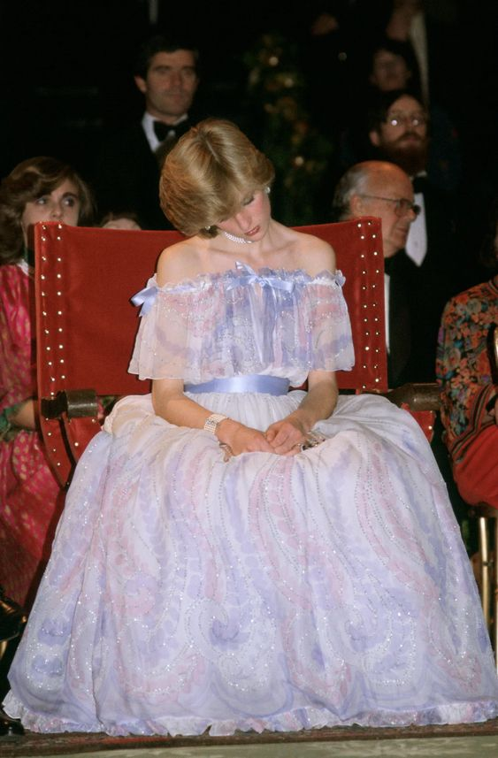
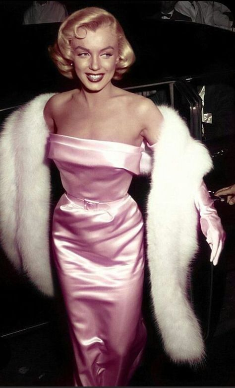
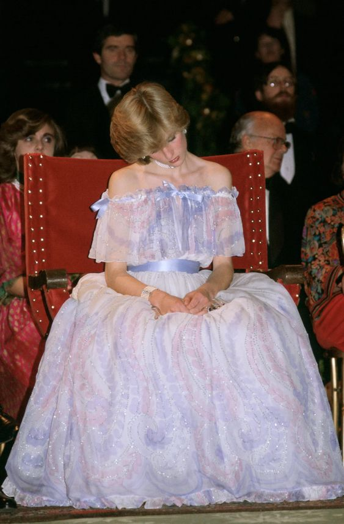
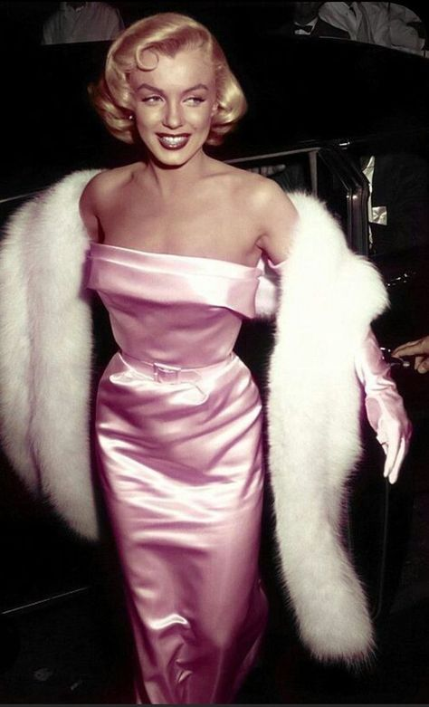
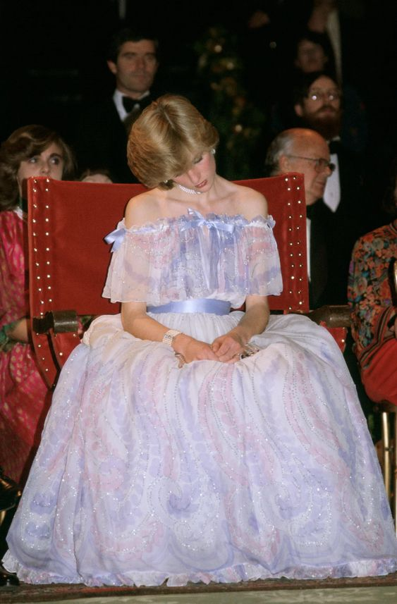
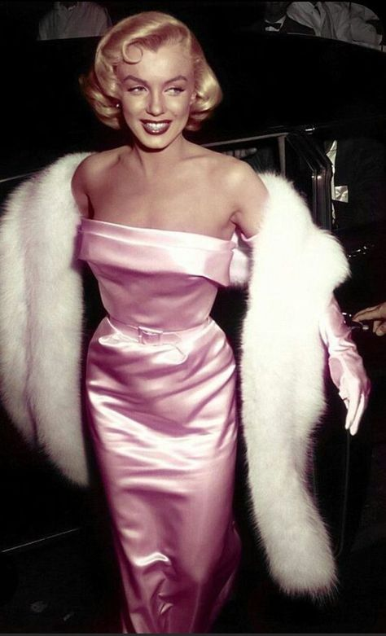

In the ever-evolving landscape of fashion and pop culture, there exists a rare breed of women who effortlessly captivate our hearts, minds, and wardrobes. They are the enigmatic figures we admire, emulate, and aspire to be—the "it-girls." But what truly defines the essence of being an it-girl? Mon delves deep into the phenomenon to decode the elusive allure that sets these modern muses apart.
At the heart of every it-girl lies an innate sense of style—an intrinsic ability to curate looks that transcend trends and leave an indelible mark on the fashion landscape. Whether it's a daring ensemble that pushes the boundaries of convention or a classic ensemble imbued with timeless elegance, the it-girl's sartorial choices serve as a canvas for self-expression and ndividuality.
Yet, being an it-girl is more than just mastering the art of dressing—it's about wielding influence that extends far beyond the confines of the runway. These trailblazers are tastemakers, setting the agenda for what's chic, cool, and covetable. Their mere endorsement can catapult a burgeoning designer into the spotlight or ignite a global frenzy for a must-have accessory.
But perhaps the most alluring quality of an it-girl lies in her intangible aura—an irresistible blend of charisma, confidence, and authenticity that leaves an indelible impression wherever she goes. With an effortless grace that belies her status, she navigates the social scene with ease, commanding attention without uttering a word.
In today's digital age, the it-girl's influence extends beyond the glossy pages of magazines and into the realm of social media. With a carefully curated feed that offers a glimpse into her world, she connects with her audience on a personal level, fostering a sense of intimacy that transcends the screen.
Yet, beneath the glamorous facade lies a multifaceted individual whose interests and pursuits defy categorization. Whether she's gracing the covers of fashion magazines, starring in blockbuster films, or championing causes close to her heart, the it-girl's versatility knows no bounds.
At its core, being an it-girl is about more than just embodying a certain aesthetic—it's about embodying a mindset. It's about embracing the power of self-confidence, individuality, and authenticity to inspire others to do the same. In a world that's constantly in flux, the it-girl serves as a beacon of style, substance, and significance—a timeless icon for the ages.

